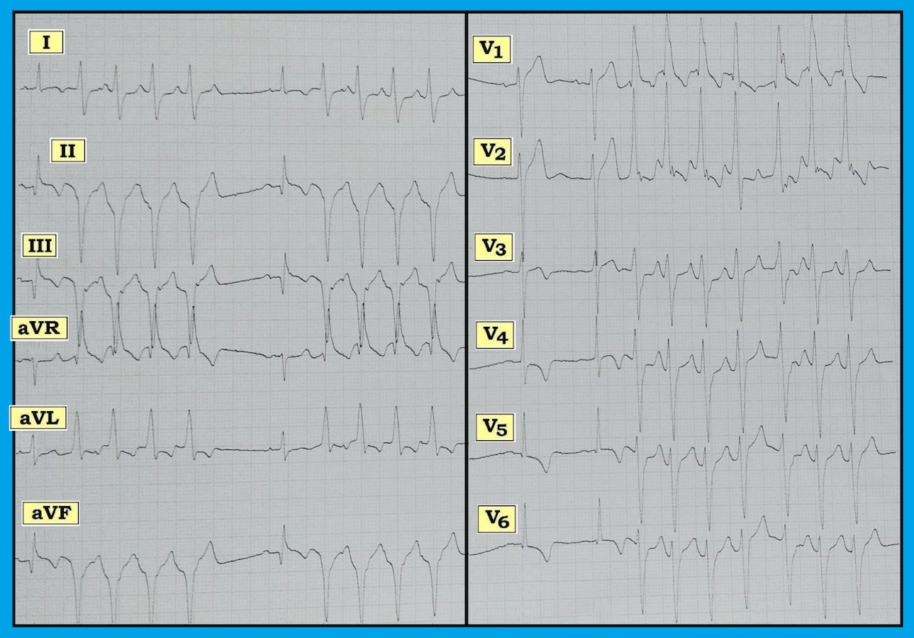
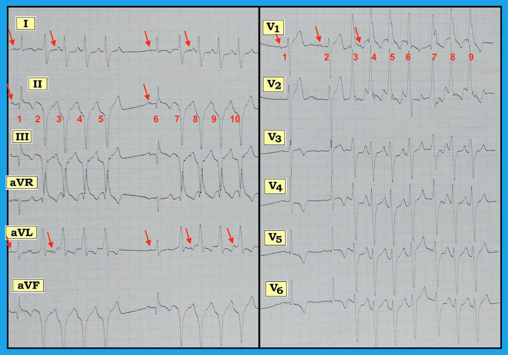

ECG Blog #151 — Hiện tượng Ashman có bị lạm dụng không?
Một người đàn ông 47 tuổi đến khám vì choáng váng từng cơn trong hai ngày trước đó. Không đau ngực. Huyết áp = 110/60 mmHg vào lúc ghi điện tâm đồ đầu tiên (Hình-1).
- Bạn diễn giải nhịp này như thế nào?
- Đây có phải là một ví dụ về hiện tượng Ashman (Ashman phenomenon)?
- Có manh mối nào gợi ý nguyên nhân có thể gây rối loạn nhịp ở bệnh nhân này không?


Diễn giải: Điện tâm đồ ở Hình-1 được chia thành 2 phần, mỗi phần hiển thị 6 chuyển đạo ghi đồng thời trong khoảng thời gian theo dõi 5 giây. Chúng ta bắt đầu bằng việc đánh giá nhịp.
ĐIỂM THEN CHỐT (PEARL): Khi rối loạn nhịp trước mặt bạn phức tạp, gồm nhiều hơn một thành phần — Hãy xem trước tiên LIỆU có một nhịp nền (underlying rhythm) hay không!
- Câu hỏi: Có một nhịp nền trong Hình-1 không? Nếu có — Bạn có biết tần số của nhịp nền này là bao nhiêu không?
LƯU Ý: Để cho rõ — chúng tôi đã đánh số các nhát bóp và thêm các mũi tên ĐỎ trên một số hoạt động nhĩ được chọn (Hình-2).


Đánh giá nhịp: Có 2 hình dạng phức bộ QRS khác nhau trong bản ghi này. Các phức bộ QRS hẹp hơn được theo sau bởi những loạt ngắn các nhát bóp rộng hơn. Dù vậy, nhịp nền là nhịp xoang — như được gợi ý bởi sự hiện diện của sóng P dương với khoảng PR cố định đi trước nhát #1 và #6 ở chuyển đạo II.
- Chúng ta thấy 2 nhát xoang liên tiếp ở chuyển đạo V1. Khoảng R-R giữa nhát #1 và 2 ở chuyển đạo này gợi ý tần số xoang nền ~70/phút. LƯU Ý: Việc xác định tần số xoang nền thường cực kỳ hữu ích khi tìm manh mối về nguyên nhân của một rối loạn nhịp phức tạp (như chúng ta sẽ thấy ngay sau đây).
- Ở các chuyển đạo chi (tức là chuyển đạo I,II,III; aVR,aVL,aVF) — mỗi nhát xoang được theo sau bởi một loạt 4 nhát rộng khá (nhưng-không-hoàn-toàn) đều với tần số ~150/phút.
- Ở các chuyển đạo trước tim, sau 2 nhát xoang — có một loạt 8 nhát rộng. Dễ thấy hơn rằng loạt 8 nhát này không hoàn toàn đều.
Câu hỏi: Các loạt nhát rộng này có phải là VT (nhịp nhanh thất - Ventricular Tachycardia)? Hay các loạt này phản ánh SVT (nhịp nhanh trên thất - SupraVentricular Tachycardia) kèm dẫn truyền lệch hướng?
- Đây có phải là hiện tượng Ashman (Ashman phenomenon)?
TRẢ LỜI:
Các loạt WCT (Wide-ComplexTachycardia - nhịp nhanh QRS rộng) có phải là VT? Nhiều tiêu chuẩn đã được mô tả để phân biệt các nhịp WCT do VT với SVT kèm BBB (blốc nhánh - Bundle Branch Block) có sẵn từ trước hoặc kèm dẫn truyền lệch hướng.
- Chúng tôi tóm tắt cách tiếp cận mà chúng tôi ưa dùng để phân biệt VT với SVT kèm dẫn truyền lệch hướng hoặc BBB có sẵn từ trước trong ECG Blog #42. Chúng tôi nêu bật một số điểm chính từ Blog #42 trong các gạch đầu dòng dưới đây.
- VT đơn dạng thường là một nhịp đều (hoặc ít nhất là khá đều). Dù vậy, rõ ràng VT có thể có đôi chút không đều. Nắm được quy tắc chung rằng VT thường ít nhất là khá đều là điều hữu ích — vì sự hiện diện của một nhịp không đều hoàn toàn sẽ gợi ý mạnh AFib (rung nhĩ - Atrial Fibrillation) hơn là VT. QRS giãn rộng có thể gặp trong AFib do BBB có sẵn từ trước — dẫn truyền lệch hướng — hoặc WPW (hội chứng Wolff-Parkinson White). Dù vậy, mặc dù có những đoạn không đều trong các loạt WCT ở Hình-2 — nhịp tổng thể của các loạt WCT này ở hầu hết các chỗ vẫn đủ đều để phù hợp với VT. Vì thế, chúng tôi cho rằng tính đều của nhịp ở Hình-2 không giúp ích cho việc xác định nguyên nhân của nó.
- Mặt khác, hình thái QRS của các nhát rộng ở Hình-2 — gợi ý mạnh VT! Loạt WCT ở chuyển đạo V1 (tức là nhát #3-8 ở chuyển đạo này) phù hợp với hình ảnh RBBB (blốc nhánh phải - Right Bundle Branch Block) có thể có nguồn gốc trên thất. Và có sóng S tận cùng đủ rộng ở cả chuyển đạo I và V6 để cũng phù hợp với RBBB. Tuy nhiên, có trục lệch cực độ (extreme axis deviation) trên mặt phẳng trán (biểu hiện bằng các phức bộ QRS âm hoàn toàn ở mỗi chuyển đạo thành dưới). Việc không có bất kỳ sóng r nào ở cả chuyển đạo I lẫn chuyển đạo aVF đủ tiêu chuẩn là trục lệch “cực độ” — và dấu hiệu này gợi ý rất mạnh nguồn gốc thất. Sự giống hình ảnh RBBB ở các chuyển đạo nêu trên gợi ý đây là một VT phân nhánh (fascicular VT), có nguồn gốc gần phân nhánh trái sau.
- Về mặt thống kê, VT phổ biến hơn nhiều so với nhịp nhanh QRS rộng có nguồn gốc trên thất. Đặc biệt khi xét đến trục lệch cực độ của các nhát rộng trong case này — các loạt WCT ở Hình-2 cần được coi là VT và điều trị tương ứng cho đến khi được chứng minh ngược lại.
LƯU Ý: Còn 1 manh mối nữa ở Hình-2 gần như khẳng định nhận định của chúng tôi.
- GỢI Ý: Hãy nhìn vào các mũi tên ĐỎ …
Phân ly nhĩ thất (AV dissociation): Phân ly nhĩ thất được cho là xảy ra khi các sóng P “đúng lúc” không liên quan đến các phức bộ QRS lân cận. Hiện tượng này có thể thoáng qua (xảy ra chỉ trong một nhát duy nhất) — hoặc kéo dài (như xảy ra khi có blốc AV hoàn toàn). Giá trị chẩn đoán của việc nhận ra phân ly nhĩ thất trong một nhịp WCT — là nó gần như chứng minh nhịp đó là VT, vì nếu các sóng P “đúng lúc” không được dẫn truyền để tạo ra các phức bộ rộng xuất hiện đều đặn, thì các nhát rộng này phải xuất phát từ dưới nút AV (Xem ECG Blog #133).
- Vấn đề là phần lớn các trường hợp khi đối mặt với một nhịp WCT chưa rõ nguyên nhân — tần số của WCT sẽ quá nhanh để chúng ta có thể phát hiện một cách tin cậy các sóng P xoang nền. Do đó, bạn sẽ không thường thấy phân ly nhĩ thất ở các VT nhanh hơn, vốn chính là những VT thử thách khả năng chẩn đoán của chúng ta.
- Theo kinh nghiệm của chúng tôi — phân ly nhĩ thất bị chẩn đoán quá mức. Có xu hướng nghĩ rằng có phân ly nhĩ thất bất cứ khi nào thấy “các chỗ lệch thêm” trong một nhịp WCT. Thực tế lâm sàng là nhiễu, chứ không phải phân ly nhĩ thất thật sự, mới là nguyên nhân thường gặp của những chỗ lệch này. Vì vậy — chúng tôi thiên về chẩn đoán dè dặt phân ly nhĩ thất — và chỉ dùng tiêu chuẩn này cho những trường hợp mà chúng tôi tin chắc về tính xác thực của nó.
Chúng tôi tin rằng phân ly nhĩ thất có hiện diện ở Hình-2. Nếu vậy, điều này chứng minh các loạt WCT là VT.
- Hãy nhớ lại chúng tôi đã nhấn mạnh tầm quan trọng của việc xác định 2 nhát dẫn truyền từ xoang liên tiếp — như chúng ta thấy ở 2 nhát đầu tiên ở chuyển đạo V1 (2 mũi tên ĐỎ đầu tiên ở chuyển đạo này). Điều này cho biết khoảng P-P của các sóng P xoang là hơn 4 ô lớn một chút, tương ứng với tần số xoang nền ~70/phút.
- Đặt compa đo (calipers) chính xác bằng khoảng P-P này — chỗ khía được đánh dấu bằng mũi tên ĐỎ thứ 3 ở chuyển đạo V1 xuất hiện đúng lúc! Sóng P thứ 3 này ở chuyển đạo V1 vì vậy biểu hiện phân ly nhĩ thất.
- Việc này không phải do ngẫu nhiên có thể thấy ở chuyển đạo I và aVL trong các chuyển đạo chi, nơi chỗ khía đúng lúc xuất hiện sau các sóng P xoang (các mũi tên ĐỎ). Phải thừa nhận là chúng tôi không thể “dò theo” hoạt động nhĩ nền suốt toàn bộ dải nhịp (Với các nhịp VT, bạn thường sẽ không thể “dò theo từng bước” các sóng P xoang nền suốt toàn bộ bản ghi) — nhưng chúng tôi cho rằng sự xuất hiện của các chỗ khía đúng lúc được đánh dấu bằng các mũi tên ĐỎ không phải do ngẫu nhiên.
- LƯU Ý: Bạn khó mà phát hiện được phân ly nhĩ thất trong một nhịp WCT nếu không dùng compa đo…
Có hiện tượng Ashman ở Hình-2 không? Hiện tượng Ashman dựa trên thực tế rằng thời kỳ trơ (và do đó cả thời kỳ trơ tương đối) phụ thuộc vào khoảng R-R đi trước. Vì vậy, việc tần số chậm lại do một khoảng ngưng tương đối trong nhịp sẽ kéo dài thời kỳ trơ tương đối của nhát kế tiếp. Điều này khiến nhát thứ 1 sau một khoảng ngưng tương đối có khả năng cao nhất bị dẫn truyền lệch hướng (Xem ECG Blog #70).
- Theo kinh nghiệm của chúng tôi — hiện tượng Ashman thường bị áp dụng sai. Hiện tượng này có thể vô cùng giá trị khi đặt trong bối cảnh có các manh mối khác ủng hộ chẩn đoán dẫn truyền lệch hướng. Nhưng không nên dùng nó đơn độc. Ở Hình-2, mặc dù các loạt WCT khởi phát sau một khoảng ngưng tương đối trong nhịp — việc có trục lệch cực độ + phân ly nhĩ thất + không có sóng P sớm khởi đầu các loạt nhát rộng, kết hợp lại ủng hộ áp đảo chẩn đoán VT.
Cuối cùng: Còn 1 thành phần nữa của Hình-2 mà chúng ta chưa phân tích. Đó là gì?
Trả lời: Sau khi đánh giá nhịp tim — chúng ta cần đánh giá các nhát dẫn truyền từ xoang trên điện tâm đồ 12 chuyển đạo này để tìm các thay đổi cấp tính có thể có. Vì vậy, chúng ta rèn cho mắt tập trung vào hình thái QRST của nhát #1 và 6 ở các chuyển đạo chi — và của nhát #1 và 2 ở các chuyển đạo trước tim.
- Cả 3 chuyển đạo thành dưới (II, III, aVF) đều có sóng Q, đoạn ST dạng vòm (coving) kèm chênh lên nhẹ, và sóng T đảo ngược. Mặc dù chuyển đạo aVL không có ST chênh xuống soi gương — nó có ST dẹt, điều không hẳn là bình thường. Nhận định của chúng tôi là nhiều khả năng có STEMI thành dưới gần đây (có thể cấp tính).
- Ở các chuyển đạo trước tim — sóng S rất sâu ở chuyển đạo V2 (sâu gần 25mm) gợi ý điện thế đạt tiêu chuẩn LVH.
- Đoạn khởi đầu của ST ở chuyển đạo V3 thẳng. Nó trở thành dạng vòm ở chuyển đạo V4. Sóng T đảo ngược mức độ vừa đến sâu thấy ở các chuyển đạo V3-đến-V6. Bức tranh này rõ ràng gợi ý thiếu máu cục bộ, có thể là cấp tính.
- LƯU Ý: Các dấu hiệu điện tâm đồ nêu trên, vốn gợi ý mạnh một biến cố tim mạch gần đây hoặc cấp tính, cung cấp thêm một lý do nữa ủng hộ các loạt WCT là VT — vì VT dễ xảy ra hơn nhiều so với SVT dẫn truyền lệch hướng trong bối cảnh thiếu máu cục bộ hoặc nhồi máu cấp.
THEO DÕI: Hóa ra bệnh nhân này có bệnh mạch vành nền nặng. Nhồi máu thành dưới được xác định là cũ — dù không có cách nào biết được điều này khi đánh giá điện tâm đồ đầu tiên của bệnh nhân mà chúng ta đã xem ở Hình-2. Các loạt VT đáp ứng với điều trị nội khoa bằng amiodarone.
---------------------------------------------------------------
LỜI CẢM ƠN: Xin cảm ơn MG đã cho phép tôi sử dụng bản ghi và ca lâm sàng này.
---------------------------------------------------------------
---------------------------------------------------------------
LƯU Ý: Các bài blog sau đây cung cấp thêm thông tin về các chủ đề được đề cập trong case này.
- Cách tiếp cận của chúng tôi để phân biệt VT với SVT kèm dẫn truyền lệch hướng hoặc BBB có sẵn từ trước — Xem ECG Blog #42.
- Để ôn lại hiện tượng Ashman — Xem ECG Blog #70.
- Để ôn lại phân ly nhĩ thất — Xem ECG Blog #133.
- Để ôn lại nhát hỗn hợp (fusion beat) — Xem ECG Blog #128.